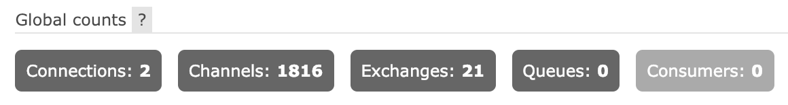
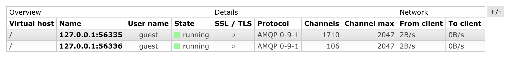
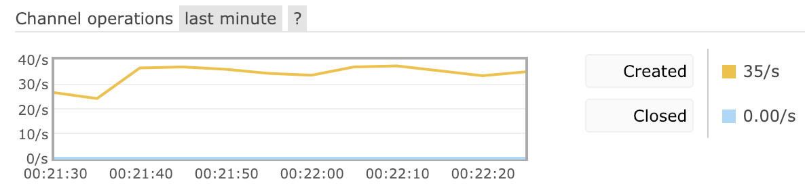
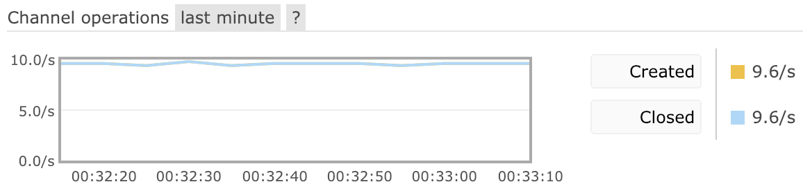
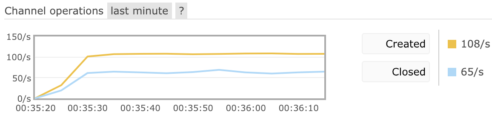
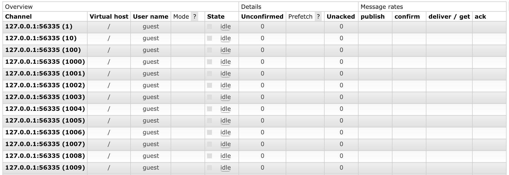

Channels
Overview
This guide covers various topics related to channels, an AMQP 0-9-1-specific abstraction. Channels cannot exist without a connection, so getting familiar with the Connections guide first is highly recommended.
This guide covers:
- The basics of channels
- Channel lifecycle
- Channel exceptions (errors) and what they mean
- Channel resource usage
- Monitoring and metrics related to channels and how to identify common problems
- Flow control
and other topics related to connections.
The Basics
Some applications need multiple logical connections to the broker. However, it is undesirable to keep many TCP connections open at the same time because doing so consumes system resources and makes it more difficult to configure firewalls. AMQP 0-9-1 connections are multiplexed with channels that can be thought of as "lightweight connections that share a single TCP connection".
Every protocol operation performed by a client happens on a channel. Communication on a particular channel is completely separate from communication on another channel, therefore every protocol method also carries a channel ID (a.k.a. channel number), an integer that both the broker and clients use to figure out which channel the method is for.
A channel only exists in the context of a connection and never on its own. When a connection is closed, so are all channels on it.
For applications that use multiple threads/processes for processing, it is very common to open a new channel per thread/process and not share channels between them.
Channel Lifecycle
Opening Channels
Applications open a channel right after successfully opening a connection.
Here's a Java client example that opens a new channel with an automatically allocated channel ID after opening a new connection:
ConnectionFactory cf = new ConnectionFactory(); Connection conn = cf.createConnection(); Channel ch = conn.createChannel(); // ... use the channel to declare topology, publish, consume
In .NET client channels are represented using the IModel interface, so the names in the API are different:
var cf = new ConnectionFactory(); var conn = cf.newConnection(); // the .NET client calls channels "models" var ch = conn.CreateModel(); // ... use the channel to declare topology, publish, consume
Much like connections, channels are meant to be long lived. That is, there is no need to open a channel per operation and doing so would be very inefficient, since opening a channel is a network roundtrip.
Closing Channels
When a channel is no longer needed, it should be closed. Closing a channel will render it unusable and schedule its resources to be reclaimed:
Channel ch = conn.createChannel(); // do some work // close the channel when it is no longer needed ch.close();
The same example using the .NET client:
// the .NET client calls channels "models" var ch = conn.CreateModel(); // do some work // close the channel when it is no longer needed ch.Close();
As mentioned above, a closed channel cannot be used. An attempt to perform an operation on a closed channel will result in an exception that says that the channel has already been closed.
When a channel's connection is closed, so is the channel.
Channels and Error Handling
In the section above channels were closed by applications. There is another way a channel can be closed: due to a protocol exception.
Certain scenarios are assumed to be recoverable ("soft") errors in the protocol. They render the channel closed but applications can open another one and try to recover or retry a number of times. Most common examples are:
- Redeclaring an existing queue or exchange with non-matching properties will fail with a 406 PRECONDITION_FAILED error
- Accessing a resource the user is not allowed to access will fail with a 403 ACCESS_REFUSED error
- Binding a non-existing queue or a non-existing exchange will fail with a 404 NOT_FOUND error
- Consuming from a queue that does not exist will fail with a 404 NOT_FOUND error
- Publishing to an exchange that does not exist will fail with a 404 NOT_FOUND error
- Accessing an exclusive queue from a connection other than its declaring one will fail with a 405 RESOURCE_LOCKED
Client libraries provide a way to observe and react to channel exceptions. For example, in the Java client there is a way to register an error handler and access a channel shutdown (closure) reason.
Any attempted operation on a closed channel will fail with an exception. Note that when RabbitMQ closes a channel, it notifies the client of that using an asynchronous protocol method. In other words, an operation that caused a channel exception won't fail immediately but a channel closure event handler will fire shortly after.
Some client libraries may use blocking operations that wait for a response. In this case they may communicate channel exceptions differently, e.g. using runtime exceptions, an error type, or other means appropriate for the language.
See the AMQP 0-9-1 Reference for a more complete list of error codes.
Resource Usage
Each channel consumes a relatively small amount of memory on the client. Depending on client library's implementation detail it can also use a dedicated thread pool (or similar) where consumer operations are dispatched, and therefore one or more threads (or similar).
Each channel also consumes a relatively small amount of memory on the node the client is connected to, plus a few Erlang processes. Since a node usually serves multiple channel connections, the effects of excessive channel usage or channel leaks will primarily be reflected in RabbitMQ nodes' metrics and not those of clients.
Given both of these factors, limiting the number of channels used per connection is highly recommended. As a guideline, most applications can use a single digit number of channels per connection. Those with particularly high concurrency rates (usually such applications are consumers) can start with one channel per thread/process/coroutine and switch to channel pooling when metrics suggest that the original model is no longer sustainable, e.g. because it consumes too much memory.
See the Monitoring, Metrics and Diagnostics section to learn about how to inspect channels, the number of channels on a connection, channel churn rate and so on.
Maximum Number of Channels per Connection
The maximum number of channels that can be open on a connection simultaneously is negotiated by client and server at connection time. The value is configurable for both RabbitMQ and client libraries.
On the server side, the limit is controlled using the channel_max:
# no more 100 channels can be opened on a connection at the same time channel_max = 100
Should the configured limit be exceeded, the connection will be closed with a fatal error:
2019-02-11 16:04:06.296 [error] <0.887.0> Error on AMQP connection <0.887.0> (127.0.0.1:49956 -> 127.0.0.1:5672, vhost: '/', user: 'guest', state: running), channel 23: operation none caused a connection exception not_allowed: "number of channels opened (22) has reached the negotiated channel_max (22)"
Clients can be configured to allow fewer channels per connection. With RabbitMQ Java client, ConnectionFactory#setRequestedChannelMax is the method that controls the limit:
ConnectionFactory cf = new ConnectionFactory(); // Ask for up to 32 channels per connection. Will have an effect as long as the server is configured // to use a higher limit, otherwise the server's limit will be used. cf.setRequestedChannelMax(32);
With RabbitMQ .NET client, use the ConnectionFactory#RequestedChannelMax property:
var cf = new ConnectionFactory(); // Ask for up to 32 channels per connection. Will have an effect as long as the server is configured // to use a higher limit, otherwise the server's limit will be used. cf.RequestedChannelMax = 32;
The lower value of the two is used: the client cannot be configured to allow for more channels than the server configured maximum. Clients that attempt that will run into an error that looks like this in the logs:
2019-02-11 16:03:16.543 [error] <0.882.0> closing AMQP connection <0.882.0> (127.0.0.1:49911 -> 127.0.0.1:5672): failed to negotiate connection parameters: negotiated channel_max = 2047 is higher than the maximum allowed value (32)
Monitoring, Metrics and Diagnostics
Because they affect node resource use, the number of currently open channels and channel opening/closure rates are important metrics of the system that should be monitored. Monitoring them will help detect a number of common problems:
- Channel leaks
- High channel churn
Both problems eventually lead to node exhaustion of resources.
Individual channel metrics such as the number of unacknowledged messages or basic.get operation rate can help identify irregularities and inefficiencies in application behavior.
Memory Use
Monitoring systems and operators alike may need to inspect how much memory channels consume on a node, the total number of channels on a node and then identify how many there are on each connection.
The number of channels is displayed in the management UI on the Overview tab, as is the number of connections. By dividing the number of channels by the number of connections the operator can determine an average number of channels per connection.
To find out how much memory on a node is used by channels, use rabbitmq-diagnostics memory_breakdown:
rabbitmq-diagnostics memory_breakdown -q --unit mb # => [elided for brevity] # ... # => connection_channels: 3.596 mb (2.27%) # ... # => [elided for brevity]
See the RabbitMQ Memory Use Analysis guide for details.
Channel Leaks
A channel leak is a condition under which an application repeatedly opens channels without closing them, or at least closing only some of them.
Channel leaks eventually exhaust the node (or multiple target nodes) of RAM and CPU resources.
Relevant Metrics
Management UI's Overview tab lists a total number of channels in all virtual hosts the current user has access to:

To inspect the current number of channels on a connection as well as the per-connection channel limit, navigate to the Connections tab and enable the relevant columns if they are not displayed:

Overview and individual node pages provide a chart of channel churn rate as of RabbitMQ 3.7.9. If the rate of channel open operations is consistently higher than that of channel close operations, this is evidence of a channel leak in one of the applications:

To find out what connection leaks channels, inspect per-connection channel count as demonstrated in this guide.
High Channel Churn
A system is said to have high channel churn when its rate of newly opened channels is consistently high and its rate of closed channels is consistently high. This usually means that an application uses short lived channels or channels are often closed due to channel-level exceptions.
While with some workloads this is a natural state of the system, long lived channels should be used instead when possible.
Management UI provides a chart of channel churn rate. Below is a chart that demonstrates a fairly low channel churn with a virtually identical number of channel open and closed in the given period of time:

While connection and disconnection rates are system-specific, rates consistently above 100/second likely indicate a suboptimal connection management by one or more applications and usually are worth investigating.

Note that some clients and runtimes (notably PHP) do not use long-lived connections and high connection churn rates are expected from them unless a specialized proxy is used.
Inspecting Channels and Their State in Management UI
To inspect channels in the management UI, navigate to the Channels tab and add or remove columns as needed:

Inspecting Channels and Their State Using CLI Tools
rabbitmqctl list_connections and rabbitmqctl list_channels are the primary commands for inspecting per-connection channel count and channel details such as the number of consumers, unacknowledged messages, prefetch and so on.
rabbitmqctl list_connections name channels -q # => name channels # => 127.0.0.1:52956 -> 127.0.0.1:5672 10 # => 127.0.0.1:52964 -> 127.0.0.1:5672 33
The rightmost column contains channel count on the connection.
Table headers can be suppressed:
rabbitmqctl list_connections name channels -q --no-table-headers # => 127.0.0.1:52956 -> 127.0.0.1:5672 10 # => 127.0.0.1:52964 -> 127.0.0.1:5672 33
To inspect individual channels, use rabbitmqctl list_channels:
rabbitmqctl list_channels -q # => pid user consumer_count messages_unacknowledged # => <rabbit@mercurio.3.815.0> guest 0 0 # => <rabbit@mercurio.3.820.0> guest 0 0 # => <rabbit@mercurio.3.824.0> guest 0 0 # => <rabbit@mercurio.3.828.0> guest 0 0 # => <rabbit@mercurio.3.832.0> guest 0 0 # => <rabbit@mercurio.3.839.0> guest 0 0 # => <rabbit@mercurio.3.840.0> guest 0 0
Table headers can be suppressed:
rabbitmqctl list_channels -q --no-table-headers # => <rabbit@mercurio.3.815.0> guest 0 0 # => <rabbit@mercurio.3.820.0> guest 0 0 # => <rabbit@mercurio.3.824.0> guest 0 0 # => <rabbit@mercurio.3.828.0> guest 0 0 # => <rabbit@mercurio.3.832.0> guest 0 0 # => <rabbit@mercurio.3.839.0> guest 0 0 # => <rabbit@mercurio.3.840.0> guest 0 0
It is possible to display a different set of columns:
rabbitmqctl list_channels -q --no-table-headers vhost connection number prefetch_count messages_unconfirmed # => / <rabbit@mercurio.3.799.0> 1 0 0 # => / <rabbit@mercurio.3.802.0> 1 0 0 # => / <rabbit@mercurio.3.799.0> 2 0 0 # => / <rabbit@mercurio.3.799.0> 3 0 0 # => / <rabbit@mercurio.3.802.0> 2 0 0 # => / <rabbit@mercurio.3.802.0> 3 0 0 # => / <rabbit@mercurio.3.799.0> 4 0 0 # => / <rabbit@mercurio.3.802.0> 4 0 0 # => / <rabbit@mercurio.3.799.0> 5 0 0 # => / <rabbit@mercurio.3.799.0> 6 0 0
rabbitmqctl list_channels -s vhost connection number confirm # => / <rabbit@mercurio.3.799.0> 1 false # => / <rabbit@mercurio.3.802.0> 1 false # => / <rabbit@mercurio.3.799.0> 2 false # => / <rabbit@mercurio.3.799.0> 3 false # => / <rabbit@mercurio.3.802.0> 2 false # => / <rabbit@mercurio.3.802.0> 3 false # => / <rabbit@mercurio.3.799.0> 4 false # => / <rabbit@mercurio.3.802.0> 4 false # => / <rabbit@mercurio.3.799.0> 5 false
Publisher Flow Control
Channels that publish messages can outpace other parts of the system, most likely busy queues and queues that perform replication. When that happens, flow control is applied to publishing channels and, in turn, connections. Channels and connections that only consume messages are not affected.
With slower consumers that use automatic acknowledgement mode it is very likely that connections and channels will experience flow control when writing to the TCP socket.
Monitoring systems can collect metrics on the number of connections in flow state. Applications that experience flow control regularly may consider to use separate connections to publish and consume to avoid flow control effects on non-publishing operations (e.g. queue management).
Getting Help and Providing Feedback
If you have questions about the contents of this guide or any other topic related to RabbitMQ, don't hesitate to ask them on the RabbitMQ mailing list.
Help Us Improve the Docs <3
If you'd like to contribute an improvement to the site, its source is available on GitHub. Simply fork the repository and submit a pull request. Thank you!
Copyright © 2007-2023 VMware, Inc. or its affiliates. All rights reserved.
Terms of Use •
Privacy •
Trademark Guidelines •
Your California Privacy Rights •
Cookie Settings